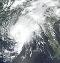
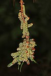
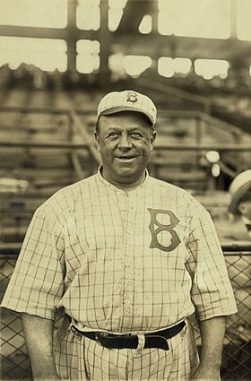

From today's featured article
Tropical Storm Bill hit the Gulf Coast of the United States in the summer of 2003. The second storm of that Atlantic hurricane season, Bill developed from a tropical wave on June 29 to the north of the Yucatán Peninsula. It slowly organized as it moved northward, and reached a peak of 60 mph (95 km/h) shortly before making landfall in south-central Louisiana. It produced a moderate storm surge, causing tidal flooding. In Montegut in the southeastern portion of the state, a levee was breached, flooding many homes, and in Florida, two swimmers drowned. As Bill accelerated to the northeast, moisture from the storm, combined with cold air from an approaching cold front, produced an outbreak of 34 tornadoes. Moderate winds and wet soil combined to topple trees onto houses and power lines, leaving hundreds of thousands without electric power. By the time Bill became extratropical on July 2, it was responsible for four deaths and around $50 million in damage. (Full article...)
Did you know...
- ... that larvae of the red-headed pine sawfly (pictured) are gregarious, and when they have defoliated a tree, move as a group to a neighbouring one?
- .. that American trade unionist George Baldanzi worked out of Greensboro, North Carolina, as part of Operation Dixie because it was close to many textile plants?
- ... that sopa de fideo, a soup in Mexican and Tex-Mex cuisine, may have originated in Spain?
- ... that Us Conductors, the debut novel by Sean Michaels depicting a fictionalized account of the relationship between Léon Theremin and Clara Rockmore, won the 2014 Scotiabank Giller Prize?
- ... that Desideria Quintanar de Yáñez was reportedly inspired by a dream to join The Church of Jesus Christ of Latter-day Saints in 1880 in Mexico?
- ... that under Operation Temperer, thousands of British Army troops can be deployed to support police in guarding key sites in the UK against terrorist threats?
- ... that Al Densmore was 24 years old when he took his seat in the Oregon House of Representatives, and just four years later his House peers elected him speaker pro tempore?
- ... that ArsenalFanTV was designed to give football supporters a chance to have their opinions heard?
In the news
- In sailing, the America's Cup concludes with Team New Zealand defeating Oracle Team USA.
- An oil truck explosion in Ahmedpur East, Pakistan, kills at least 150 people and injures more than 100 others.
- The World Health Organization estimates that 200,000 people in Yemen have been infected with cholera.
- At least 10 people are killed and more than 90 others are missing following a landslide in Sichuan, China.
- In Pakistan, at least 80 people are killed and more than 200 others are injured in multiple bombings in Quetta and Parachinar.
On this day...
- 1444 – In their rebellion against the Ottoman Empire, Albanians led by Skanderbeg routed the Ottoman forces in the Battle of Torvioll.
- 1613 – The original Globe Theatre in London burned to the ground after a cannon employed for special effects misfired during a performance of William Shakespeare's Henry VIII and ignited the theatre's roof.
- 1914 – During the second day of the anti-Serb riots in Sarajevo, numerous buildings owned by ethnic Serbs were vandalized and looted.
- 1967 – Actress Jayne Mansfield (pictured), her boyfriend Sam Brody, and their driver were killed in a car accident outside of New Orleans, while her children Miklós, Zoltán, and Mariska Hargitay escaped with only minor injuries.
- 2007 – Apple Inc. released the first generation iPhone, which revolutionized the smartphone industry and made the company one of the world's most valuable publicly traded companies.
Today's featured picture
Wilbert Robinson (1863–1934) was an American catcher, coach and manager in Major League Baseball. Robinson made it to the major leagues in 1886 with the Philadelphia Athletics of the American Association, transferring to the Baltimore Orioles in 1890. After the Orioles, by then playing in the National League, folded in 1899, he played one season with the St. Louis Cardinals before spending his final season with a new Baltimore Orioles team in the American League. (That team later moved to New York. The present Baltimore Orioles are yet another team.) Robinson played 1,316 games as a catcher, compiled a career batting average of .273, and was inducted into the Baseball Hall of Fame in 1945. He is shown here in 1916 as the manager of the Brooklyn Robins or Dodgers (now the Los Angeles Dodgers).
Other areas of Wikipedia
- Community portal - Bulletin board, projects, resources and activities covering a wide range of Wikipedia areas.
- Help desk - Ask questions about using Wikipedia.
- Local embassy - Ask questions about using Wikipedia.
- Reference desk - Serving as virtual librarians, Wikipedia volunteers tackle your questions on a wide range of subjects.
- Site news - Announcements, updates, articles and press releases on Wikipedia and the Wikimedia Foundation.
- Village pump - For discussions about Wikipedia itself, including areas for technical issues and policies.
Wikipedia's sister projects
Wikipedia is hosted by the Wikimedia Foundation, a non-profit organization that also hosts a range of other projects: